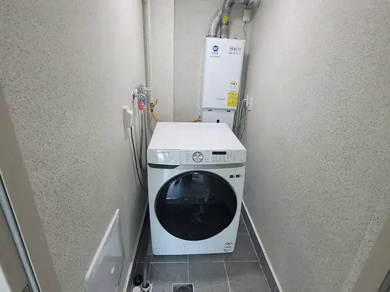
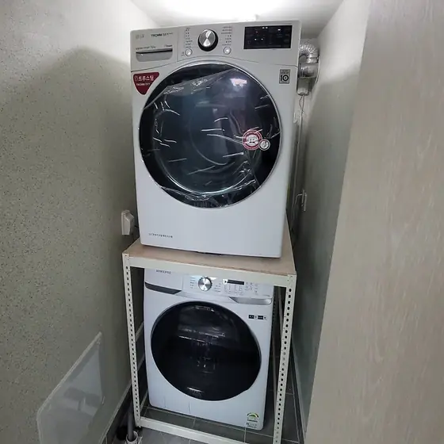
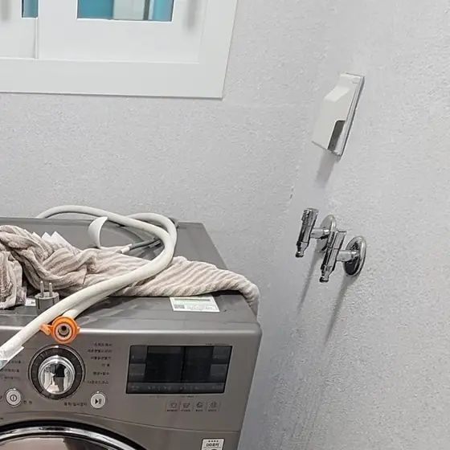
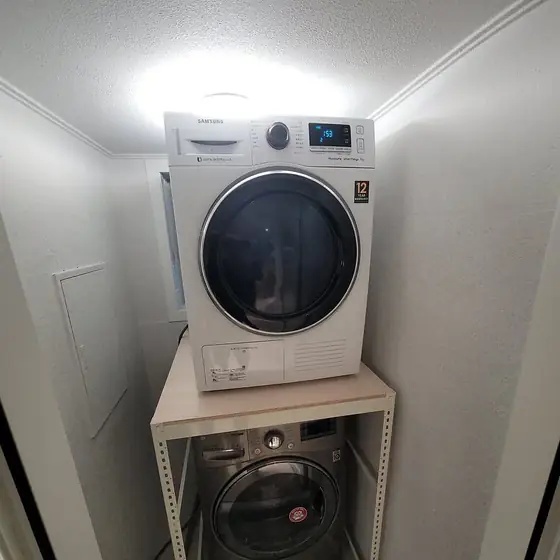

BEFOREAFTER서울 강남 세탁기 위 건조기 철제 프레임 설치
- 작업 전
- 처음 방문했을 때에는 세탁기 한 대만 세탁실 안쪽에 놓여 있었습니다. 세탁기 위쪽은 비어 있었지만 뒤쪽에는 보일러가 있고 옆에는 급수 배관과 호스, 바닥에는 배수구가 있었습니다.
- 작업 내용
- 세탁실 구조 확인 → 제품 크기 확인 → 철제 프레임 조립 → 상판 설치 → 건조기 이동 및 설치
- 작업 완료
- 작업 전에는 세탁기 위쪽 공간을 활용하지 못하고 있었습니다. 철제 프레임과 상판을 설치한 뒤 건조기를 위쪽으로 올리면서 좁은 세탁실 안에서도 세탁기와 건조기를 상하로 함께 사용할 수 있게 되었습니다.
- 마무리
- 또 건조기가 세탁기 위에 직접 올라가는 것이 아니라 별도의 프레임이 무게를 지지하도록 만들어 두 제품이 서로 맞닿지 않도록 했습니다.
2026.11.23 · 블로그에서 전체 과정 보기 →

BEFOREAFTER부천 원미 턱 있는 세탁실 건조기 렉 설치
- 작업 전
- 기존에는 세탁기만 설치되어 있었으며 건조기를 둘 공간이 없어 사용이 어려운 상태였습니다. 또한 세탁실 바닥에 높은 턱이 있어 일반적인 렉 설치 시 수평이 맞지 않는 구조였습니다.
- 작업 내용
- 건조기 렉 조립 작업 → 건조기 상부 적재 작업 → 수평 보정 및 설치 완료 → 최종 점검 및 테스트
- 작업 완료
- 좁은 세탁실에서도 건조기를 안전하게 세탁기 위로 설치하여 공간 활용도를 높여드렸습니다.
- 마무리
- 특히 바닥 턱으로 인해 수평이 맞지 않는 부분은 고임을 이용하여 안전하게 보정하였으며, 전동 리프트를 이용해 건조기를 안전하게 적재하여 제품 손상 없이 깔끔하게 설치를 마무리하였습니다.
2026.07.30 · 블로그에서 전체 과정 보기 →